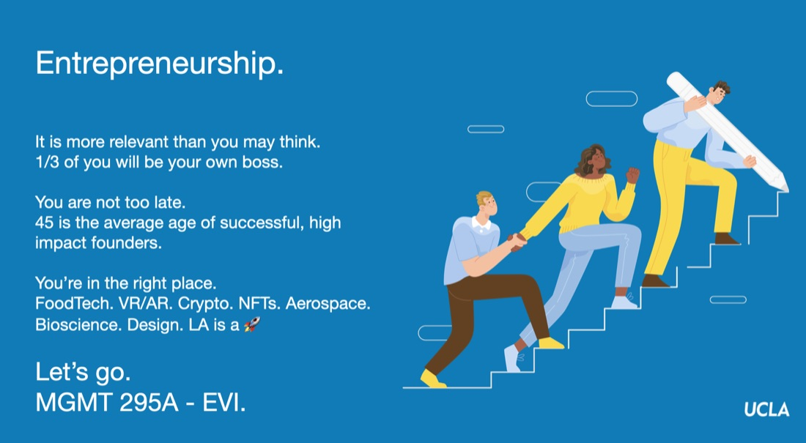
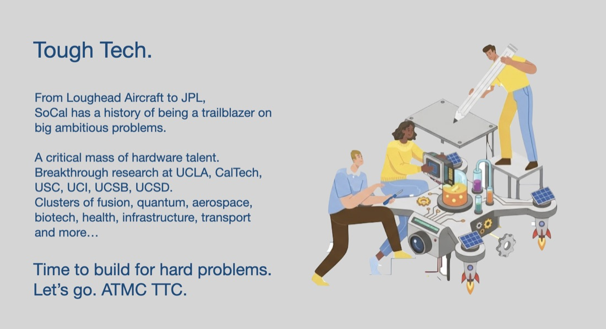

Welcome!
I am an Assistant Professor of Strategy at UCLA, where I study how measurement shapes innovation and entrepreneurship. When a technology is new, there is often no agreed-upon way to gauge quality or progress. My research examines how the metrics we choose in these settings steer what firms build, what investors back, and which directions of innovation get pursued at all. In nascent markets, deciding what to measure is one of the most consequential strategic choices there is.
My work spans regulatory metrics, entrepreneurial strategy, and how investors and entrepreneurs evaluate one another when hard data is scarce. I actively bridge research and practice as a faculty affiliate of the Price Center for Entrepreneurship & Innovation and the Easton Technology Management Center.
I received my PhD and SM from MIT, and a BCom and BA from Queen’s University. Prior to graduate school, I co-founded an education software startup (out of a leading Canadian entrepreneurship program and accelerator), worked in venture capital in Toronto and Boston, and conducted research at the Harvard Business School ISC.
Peer-Reviewed Publications
- “A Familiar Face: Measuring Visual Similarity in Venture Capital.” 2026. Strategy Science, forthcoming. [Summary]
- “Measurement for Dummies? Exploring the Role of Regulatory Metrics and Firm Strategy.” 2025. Management Science, forthcoming. [Summary]
- “Foundations of Entrepreneurial Strategy” (with Joshua Gans and Scott Stern). 2019. Strategic Management Journal 40(5): 736–756.
Working Papers
- “Reversing the Herd: Binding Caps and the Direction of Innovation.” R&R
- “Measuring the Frontier: How Figures of Merit Shape Innovation.”
- “Selling Science: The Role of Framing in the Market for Innovative Ideas” (with Melody Chang).
- “Some Simple Economics of AGI” (with Christian Catalini and Xiang Hui).
Teaching
I teach entrepreneurship — both the general skills to start a company in any sector, and a specialized 2nd-year capstone focused on deep tech (aka “tough tech”). It’s one of the best parts of my job, and I’m thrilled to support my students as they launch businesses in sectors from beverages to beauty to AI-driven software — and even a castle rental service! You can read more about why I view my role as giving students the confidence to bet on themselves here.
MGMT 295A — Entrepreneurship and Venture Initiation
Course description
1 out of 3 of you will be your own boss at some point in your life — and that doesn’t include those of you that will join, invest in, or advise a startup, small business or spin-off! Whether you already have a startup pitch deck, a side hustle or just an inkling that you’d like to try one day, this class will equip you with a research-backed toolkit to help you take an idea and build it into an impactful company. The course consists of case discussions, lectures, guest speakers and a course-long startup project.
Class testimonials
“It’s the best course I’ve taken… the final pitches were impressive and the result was a big confidence boost for me.”
“I would recommend this class to everyone in the MBA program!”
“Presenting my business idea formally in the classroom has been one of the best experiences of my MBA journey so far.”

MGMT 274A — Tough Tech Commercialization Capstone (ATMC)
Course description
Many of the most pressing problems we face today need ambitious, deep technology or science to make progress. Anchored in the principles of innovation and technology strategy, this capstone brings together the bright business minds of Anderson MBAs with high-potential inventions coming out of labs at UCLA and in Southern California to help unlock the lab-to-market bottleneck — moving the needle on technology, market, regulatory, scale, or financing risk.

Interested in a business PhD? Visit here and here!
Business Writing
- “What Gets Measured, AI Will Automate” (with Christian Catalini and Kevin Zhang). 2025. Harvard Business Review.
- “The Race to Dominate Stablecoins” (with Christian Catalini). 2024. Harvard Business Review.
- “Do Crypto Prices Actually Mean Anything?” (with Christian Catalini). 2023. Harvard Business Review.
- “Choosing a Customer” (with Joshua Gans and Scott Stern). MIT Sloan Teaching Note.
- “Avatech” (with Scott Stern). MIT Sloan Teaching Case.
- “Beepi” (with Scott Stern). MIT Sloan Teaching Case.
- “Bionym” (with Scott Stern). MIT Sloan Teaching Case.
- “Clover Food Labs” (with Scott Stern). MIT Sloan Teaching Case.
- “Madaket” (with Kenny Ching and Scott Stern). MIT Sloan Teaching Case.
- “Ministry of Supply” (with Scott Stern). MIT Sloan Teaching Case.
- [ More Entrepreneurial Strategy cases, homework and slides available here ]